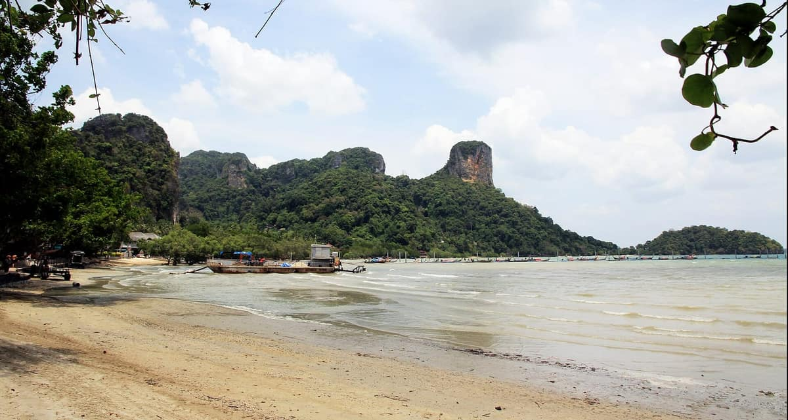
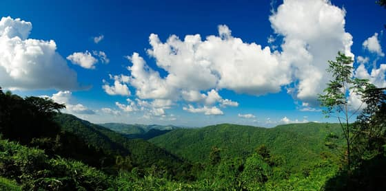
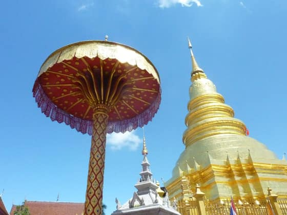
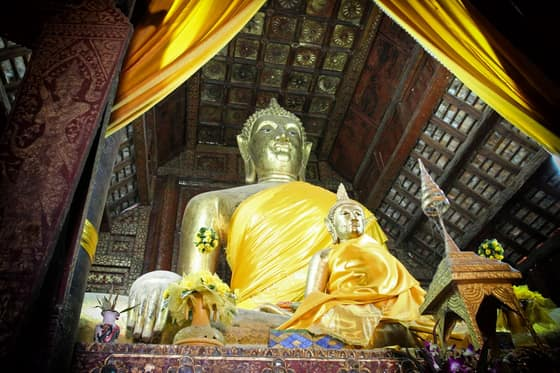
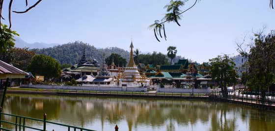

A prototype page for review before any rollout — not linked from the live site, and every page carries noindex, nofollow
Search
Type a province, a hotel, a restaurant, or whatever you feel like doing. This prototype segments Thai before it searches, so a run-together query like “ร้านอาหารเชียงใหม่” finally finds something.
Recent searches
Kept in this browser only — never sent to a server, and nobody else can see it.
Search results
Nothing searched yet — below are the destinations people open most, and every category.
Every link below is a real page. This list is the page without scripting — the typeahead upgrades it, it never replaces it.
Popular destinations





Browse stays
130


Browse restaurants
75


Browse rankings
65


Browse guides
95


Browse destinations
95



What this prototype changes, and by how much
Thai is written without spaces between words, so today’s live search compares the whole typed string against raw text, row by row. Type “ร้านอาหารเชียงใหม่” (Chiang Mai restaurants) and you get zero results, even though dozens of Chiang Mai restaurant pages exist. This prototype uses Intl.Segmenter through the shell’s th-segment.js to segment both the index and the query, then ORs the result with the raw string, because ICU mis-splits proper nouns.
Measured against the live search index (7,376 rows, measured 8 Sep 2026)
| Query | Search on the site today | This prototype |
|---|---|---|
| เชียงใหม่ (Chiang Mai) | the Chiang Mai hub ranks 8th of 225 results | 1st |
| กระบี่ (Krabi) | the Krabi hub ranks 5th of 152 results | 1st |
| ภูเก็ต (Phuket) | the Phuket hub ranks 8th of 164 results | 1st |
| ร้านอาหารเชียงใหม่ (Chiang Mai restaurants) | 0 results | 35 results |
| ที่พักเขาใหญ่วิวดี (Khao Yai stays with a view) | 0 results | 5 results |
The index on this page
This page embeds a small index of 0 entries, built from real files in the repo (astro/src/content/ and _internal/province-data/). Every name, score, price, photo and link comes from a real file — nothing is invented — but it is not the whole site. The live index is 7,376 rows and downloads 3.4 MB every time the search page opens. The next step is an inverted index built at build time, shipping only what a query needs.
Every score names its source and is never averaged across sources — if Booking and Agoda disagree, both numbers are shown.